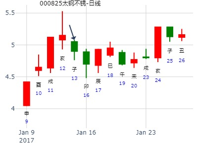
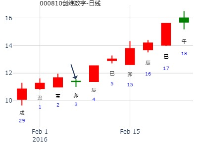
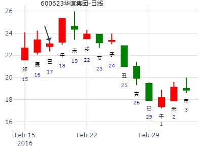
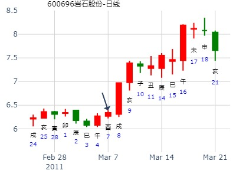
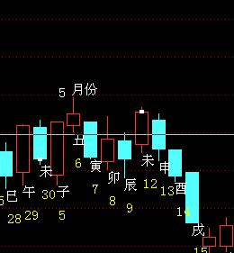
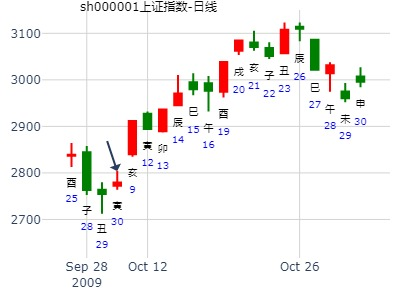
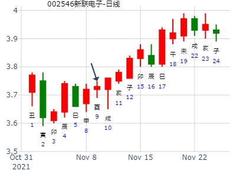
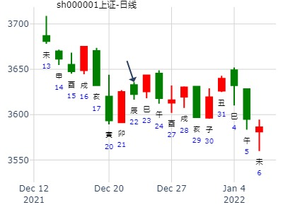

性别：男 占事：002009
起卦方式：手工指定 易经股市论坛 www.yijingstock.com 在线排盘系统
公历时间：2013年1月24日8时32分
干 支：壬辰年 癸丑月 庚寅日 庚辰时
旬 空：午未 寅卯 (午未) 申酉
坤宫：地天泰（六合）
六神 伏 神 【本 卦】
螣蛇 ▄▄ ▄▄ 子孙癸酉金 应
勾陈 ▄▄ ▄▄ 妻财癸亥水
朱雀 ▄▄ ▄▄ 兄弟癸丑土
青龙 ▄▄▄▄▄ 兄弟甲辰土 世
玄武 父母乙巳火 ▄▄▄▄▄ 官鬼甲寅木
白虎 ▄▄▄▄▄ 妻财甲子水
试断：六合卦吉，酉金旺相生才丑土兄日克巳火休囚不上卦，收阳
平开横向震荡向下收跌0.26、3.42的大阴线，断错
出生：没填 年 性别：男 占事：000825太钢不锈下周涨跌
排卦：元亨利贞网六爻在线排盘系统 http://www.china95.net
公历起卦时间：2017年1月13日15时53分 (电脑自动)
干支：丙申年 辛丑月 庚子日 甲申时 （日空：辰巳）
神煞：驿马－寅 桃花－酉 日禄－申 贵人－丑，未
坤宫：地天泰 (六合) 坤宫：地天泰 (六合)
六神 伏神 本 卦 变 卦
腾蛇 子孙癸酉金 ▅▅ ▅▅ 应 子孙癸酉金 ▅▅ ▅▅ 应
勾陈 妻财癸亥水 ▅▅ ▅▅ 妻财癸亥水 ▅▅ ▅▅
朱雀 兄弟癸丑土 ▅▅ ▅▅ 兄弟癸丑土 ▅▅ ▅▅
青龙 兄弟甲辰土 ▅▅▅▅▅ 世 兄弟甲辰土 ▅▅▅▅▅ 世
玄武 父母乙巳火 官鬼甲寅木 ▅▅▅▅▅ 官鬼甲寅木 ▅▅▅▅▅
白虎 妻财甲子水 ▅▅▅▅▅ 妻财甲子水 ▅▅▅▅▅

生：没填 年 性别：男 占事：000810创维数字明天涨跌
排卦：元亨利贞网六爻在线排盘系统 http://www.china95.net
公历起卦时间：2016年2月3日15时47分 (电脑自动)
干支：乙未年 己丑月 乙卯日 甲申时 （日空：子丑）
神煞：驿马－巳 桃花－子 日禄－卯 贵人－子，申
坤宫：地天泰 (六合) 坤宫：地天泰 (六合)
六神 伏神 本 卦 变 卦
玄武 子孙癸酉金 ▅▅ ▅▅ 应 子孙癸酉金 ▅▅ ▅▅ 应
白虎 妻财癸亥水 ▅▅ ▅▅ 妻财癸亥水 ▅▅ ▅▅
腾蛇 兄弟癸丑土 ▅▅ ▅▅ 兄弟癸丑土 ▅▅ ▅▅
勾陈 兄弟甲辰土 ▅▅▅▅▅ 世 兄弟甲辰土 ▅▅▅▅▅ 世
朱雀 父母乙巳火 官鬼甲寅木 ▅▅▅▅▅ 官鬼甲寅木 ▅▅▅▅▅
青龙 妻财甲子水 ▅▅▅▅▅ 妻财甲子水 ▅▅▅▅▅
子孙暗动是关键。

这个是涨停卦吗
出生：没填 年 性别：男 占事：600623双钱股份明天涨跌
排卦：元亨利贞网六爻在线排盘系统 http://www.china95.net
公历起卦时间：2016年2月17日15时48分 (电脑自动)
干支：丙申年 庚寅月 己巳日 壬申时 （日空：戌亥）
坤宫：地天泰 (六合) 坤宫：地天泰 (六合)
六神 伏神 本 卦 变 卦
勾陈 子孙癸酉金 ▅▅ ▅▅ 应 子孙癸酉金 ▅▅ ▅▅ 应
朱雀 妻财癸亥水 ▅▅ ▅▅ 妻财癸亥水 ▅▅ ▅▅
青龙 兄弟癸丑土 ▅▅ ▅▅ 兄弟癸丑土 ▅▅ ▅▅
玄武 兄弟甲辰土 ▅▅▅▅▅ 世 兄弟甲辰土 ▅▅▅▅▅ 世
白虎 父母乙巳火 官鬼甲寅木 ▅▅▅▅▅ 官鬼甲寅木 ▅▅▅▅▅
腾蛇 妻财甲子水 ▅▅▅▅▅ 妻财甲子水 ▅▅▅▅▅
关键： 亥水旬空被冲，暗动。 但是兄弟持世，不持续

涨停卦例二： 意念测下周600696涨跌？
公历时间：2011年3月6日18时32分 农历时间：辛卯年 二月初二日酉时
干支：辛卯年 辛卯月 庚申日 乙酉时
旬空：午未 午未 子丑 午未
神煞：驿马─寅 桃花─酉 日禄─申 贵人─丑，未
坤宫：地天泰（六合）
六神 伏 神 【本 卦】
螣蛇 ▄▄ ▄▄ 子孙癸酉金 应
勾陈 ▄▄ ▄▄ 妻财癸亥水
朱雀 ▄▄ ▄▄ 兄弟癸丑土
青龙 ▄▄▄▄▄ 兄弟甲辰土 世
玄武 父母乙巳火 ▄▄▄▄▄ 官鬼甲寅木
白虎 ▄▄▄▄▄ 妻财甲子水
有云：六合难涨！ 又是忌神持世，所以尽管辛苦选出来的票还是没有坚定买入……汗！
实际：酉日涨1.12%，戍日涨停^——酉合世戍冲世均涨，难道就是因为是“地天泰”么？呵呵 （明日亥临，有人说，兄爻持世忌临用神日，且看？！）——亥日涨6.03%，子丑日估计下跌——子日合丑兄冷落世辰土；丑日出空力量大过辰土……
交流卦理：涨停卦象之一 六冲化六冲 兄爻轮动生世 600069
尾盘清仓渝开发，小获利，再战金鹰股份。（600069又涨停，怎一个汗字了得）
很遗憾，以下是我技术寻找的四只股之一，通过占卦，却是兄爻持世又是六合卦，所以排除了。但还是把卦发上来供大家研究！

求测人：某人，男，辛亥(1971年)，电脑摇卦(起卦方式)
占问事宜：明天股市
公历：2016年3月9日21时23分，星期三。
干支：丙申年 辛卯月 庚寅日 丁亥时 (卦身：寅)
主变卦 地天泰(坤宫) [空亡:午、未]
螣蛇 ▅▅ ▅▅ 子孙癸酉金 应
勾陈 ▅▅ ▅▅ 妻财癸亥水
朱雀 ▅▅ ▅▅ 兄弟癸丑土
青龙 ▅▅▅▅▅ 兄弟甲辰土 世
玄武 父母乙巳火 ▅▅▅▅▅ 官鬼甲寅木
白虎 ▅▅▅▅▅ 妻财甲子水
捍卫老祖宗感通卦尊严：测2020.3.17上证收盘走势？2赛02
测2020.3.17上证收盘十位数tlmn sbmn galyh xs?
排卦：元亨利贞网六爻在线排盘系统 http://www.china95.net
公历起卦时间：2020年3月16日16时52分 (电脑自动)
干支：庚子年 己卯月 戊午日 庚申时 （日空：子丑）
坤宫：地天泰 (六合) 坤宫：地天泰 (六合)
六神 伏神 本 卦 变 卦
朱雀 子孙癸酉金 ▅▅ ▅▅ 应 子孙癸酉金 ▅▅ ▅▅ 应
青龙 妻财癸亥水 ▅▅ ▅▅ 妻财癸亥水 ▅▅ ▅▅
玄武 兄弟癸丑土 ▅▅ ▅▅ 兄弟癸丑土 ▅▅ ▅▅
白虎 兄弟甲辰土 ▅▅▅▅▅ 世 兄弟甲辰土 ▅▅▅▅▅ 世
螣蛇 父母乙巳火 官鬼甲寅木 ▅▅▅▅▅ 官鬼甲寅木 ▅▅▅▅▅
勾陈 妻财甲子水 ▅▅▅▅▅ 妻财甲子水 ▅▅▅▅▅
3.26上证收盘走势？
出生：2020 年 性别：男 占事：没填
排卦：元亨利贞网六爻在线排盘系统 http://www.china95.net
公历起卦时间：2020年3月25日17时11分 (电脑自动)
干支：庚子年 己卯月 丁卯日 己酉时 （日空：戌亥）
坤宫：地天泰 (六合) 坤宫：地天泰 (六合)
六神 伏神 本 卦 变 卦
青龙 子孙癸酉金 ▅▅ ▅▅ 应 子孙癸酉金 ▅▅ ▅▅ 应
玄武 妻财癸亥水 ▅▅ ▅▅ 妻财癸亥水 ▅▅ ▅▅
白虎 兄弟癸丑土 ▅▅ ▅▅ 兄弟癸丑土 ▅▅ ▅▅
螣蛇 兄弟甲辰土 ▅▅▅▅▅ 世 兄弟甲辰土 ▅▅▅▅▅ 世
勾陈 父母乙巳火 官鬼甲寅木 ▅▅▅▅▅ 官鬼甲寅木 ▅▅▅▅▅
朱雀 妻财甲子水 ▅▅▅▅▅ 妻财甲子水 ▅▅▅▅▅

000022深赤湾A占问：4月13日周五000022深赤湾A“做多”可以胜出吗？公历时间：2007年4月12日23时44分 星期四农历时间：丁亥年二月廿六子时
干支：丁亥年 甲辰月 丁丑日 庚子时 (旬空：申酉)
神煞：驿马—亥 桃花—午 日禄—午 贵人—酉，亥
坤宫：地天泰（六合）
六神 伏 神 【本 卦】
青龙 ▅▅ ▅▅ 子孙癸酉金 应
玄武 ▅▅ ▅▅ 妻财癸亥水
白虎 ▅▅ ▅▅ 兄弟癸丑土
螣蛇 ▅▅▅▅▅ 兄弟甲辰土 世
勾陈 父母乙巳火 ▅▅▅▅▅ 官鬼甲寅木
朱雀 ▅▅▅▅▅ 妻财甲子水
占事：至23日如何走？
排卦：元亨利贞网六爻在线排盘系统 https://www.china95.net
公历起卦时间：2021年4月11日11时10分 (电脑自动)
农历：辛丑年二月三十日午时
清明：2021年04月04日21时37分
立夏：2021年05月05日14时57分
干支：辛丑年 壬辰月 己丑日 庚午时 （日空：午未）
神煞：驿马－亥 桃花－午 日禄－午 贵人－子，申
坤宫：地天泰 (六合) 坤宫：地天泰 (六合)
六神 伏神 本 卦 变 卦
勾陈 子孙癸酉金 ▅▅ ▅▅ 应 子孙癸酉金 ▅▅ ▅▅ 应
朱雀 妻财癸亥水 ▅▅ ▅▅ 妻财癸亥水 ▅▅ ▅▅
青龙 兄弟癸丑土 ▅▅ ▅▅ 兄弟癸丑土 ▅▅ ▅▅
玄武 兄弟甲辰土 ▅▅▅▅▅ 世 兄弟甲辰土 ▅▅▅▅▅ 世
白虎 父母乙巳火 官鬼甲寅木 ▅▅▅▅▅ 官鬼甲寅木 ▅▅▅▅▅
螣蛇 妻财甲子水 ▅▅▅▅▅ 妻财甲子水 ▅▅▅▅▅
至23日先跌、再涨、然后再下跌？
出生：2022 年 性别：男 占事：00211X 0420
排卦：元亨利贞网六爻在线排盘系统 https://www.china95.net
公历起卦时间：2022年4月19日17时3分 (在线摇卦)
干支：壬寅年 甲辰月 壬寅日 己酉时 （日空：辰巳）
神煞：驿马－申 桃花－卯 日禄－亥 贵人－卯，巳
坤宫：地天泰 (六合) 坤宫：地天泰 (六合)
六神 伏神 本 卦 变 卦
白虎 子孙癸酉金 ▅▅ ▅▅ 应 子孙癸酉金 ▅▅ ▅▅ 应
螣蛇 妻财癸亥水 ▅▅ ▅▅ 妻财癸亥水 ▅▅ ▅▅
勾陈 兄弟癸丑土 ▅▅ ▅▅ 兄弟癸丑土 ▅▅ ▅▅
朱雀 兄弟甲辰土 ▅▅▅▅▅ 世 兄弟甲辰土 ▅▅▅▅▅ 世
青龙 父母乙巳火 官鬼甲寅木 ▅▅▅▅▅ 官鬼甲寅木 ▅▅▅▅▅
玄武 妻财甲子水 ▅▅▅▅▅ 妻财甲子水 ▅▅▅▅▅
卦主反馈结果：00211X跌
泰静卦,4月上证？金玉堂
时间: 2023-04-02
干支: 癸卯年乙卯月庚寅日 (旬空: 午未 )
泰静卦
腾蛇 ▅▅ ▅▅ 子孙酉金 应
勾陈 ▅▅ ▅▅ 妻财亥水
朱雀 ▅▅ ▅▅ 兄弟丑土
青龙 ▅▅▅▅▅ 兄弟辰土 世
玄武 ▅▅▅▅▅ 官鬼寅木
白虎 ▅▅▅▅▅ 妻财子水
马后炮：卯月寅日的泰卦居然还能涨一段。难得的例子。超出概率。
或许世爻被日月克住，定性还能涨。
占事：5月第一周走势？小梅卦
时间: 2014-05-02 23时7分
干支：甲午年戊辰月癸酉日甲子时
泰静卦
白虎 ▅▅ ▅▅ 子孙酉金 应
腾蛇 ▅▅ ▅▅ 妻财亥水
勾陈 ▅▅ ▅▅ 兄弟丑土
朱雀 ▅▅▅▅▅ 兄弟辰土 世
青龙 父母巳火▅▅▅▅▅ 官鬼寅木
玄武 ▅▅▅▅▅ 妻财子水

出生：没填 年 性别：男 占事：300028金亚科技明天涨跌
公历起卦时间：2016年5月10日18时7分 (电脑自动)
干支：丙申年 癸巳月 壬辰日 己酉时 （日空：午未）
坤宫：地天泰 (六合) 坤宫：地天泰 (六合)
六神 伏神 本 卦 变 卦
白虎 子孙癸酉金 ▅▅ ▅▅ 应 子孙癸酉金 ▅▅ ▅▅ 应
腾蛇 妻财癸亥水 ▅▅ ▅▅ 妻财癸亥水 ▅▅ ▅▅
勾陈 兄弟癸丑土 ▅▅ ▅▅ 兄弟癸丑土 ▅▅ ▅▅
朱雀 兄弟甲辰土 ▅▅▅▅▅ 世 兄弟甲辰土 ▅▅▅▅▅ 世
青龙 父母乙巳火 官鬼甲寅木 ▅▅▅▅▅ 官鬼甲寅木 ▅▅▅▅▅
玄武 妻财甲子水 ▅▅▅▅▅ 妻财甲子水 ▅▅▅▅▅

航天长峰庚子年巳午月哪月底？
出生：2020 年 性别：男 占事：没填
排卦：元亨利贞网六爻在线排盘系统 https://www.suan98.com
公历起卦时间：2020年5月20日10时55分 (电脑自动)
干支：庚子年 辛巳月 癸亥日 丁巳时 （日空：子丑）
神煞：驿马－巳 桃花－子 日禄－子 贵人－卯，巳
坤宫：地天泰 (六合) 坤宫：地天泰 (六合)
六神 伏神 本 卦 变 卦
白虎 子孙癸酉金 ▅▅ ▅▅ 应 子孙癸酉金 ▅▅ ▅▅ 应
螣蛇 妻财癸亥水 ▅▅ ▅▅ 妻财癸亥水 ▅▅ ▅▅
勾陈 兄弟癸丑土 ▅▅ ▅▅ 兄弟癸丑土 ▅▅ ▅▅
朱雀 兄弟甲辰土 ▅▅▅▅▅ 世 兄弟甲辰土 ▅▅▅▅▅ 世
青龙 父母乙巳火 官鬼甲寅木 ▅▅▅▅▅ 官鬼甲寅木 ▅▅▅▅▅
玄武 妻财甲子水 ▅▅▅▅▅ 妻财甲子水 ▅▅▅▅▅

出生：没填 年 性别：男 占事：002029七匹狼下午跟明天涨跌
排卦：元亨利贞网六爻在线排盘系统 http://www.china95.net
公历起卦时间：2015年6月24日10时55分 (电脑自动)
干支：乙未年 壬午月 辛未日 癸巳时 （日空：戌亥）
坤宫：地天泰 (六合) 坤宫：地天泰 (六合)
六神 伏神 本 卦 变 卦
腾蛇 子孙癸酉金 ▅▅ ▅▅ 应 子孙癸酉金 ▅▅ ▅▅ 应
勾陈 妻财癸亥水 ▅▅ ▅▅ 妻财癸亥水 ▅▅ ▅▅
朱雀 兄弟癸丑土 ▅▅ ▅▅ 兄弟癸丑土 ▅▅ ▅▅
青龙 兄弟甲辰土 ▅▅▅▅▅ 世 兄弟甲辰土 ▅▅▅▅▅ 世
玄武 父母乙巳火 官鬼甲寅木 ▅▅▅▅▅ 官鬼甲寅木 ▅▅▅▅▅
白虎 妻财甲子水 ▅▅▅▅▅ 妻财甲子水 ▅▅▅▅▅
2015年7月大盘涨跌卦
占事：2015年7月大盘涨跌？
公历起卦时间：2015年6月30日16时29分 (手工指定)
干支：乙未年 壬午月 丁丑日 戊申时 （日空：申酉）
神煞：驿马－亥 桃花－午 日禄－午 贵人－酉，亥
坤宫：地天泰 (六合) 坤宫：地天泰 (六合)
六神 伏神 本 卦 变 卦
青龙 子孙癸酉金 ▅▅ ▅▅ 应
玄武 妻财癸亥水 ▅▅ ▅▅
白虎 兄弟癸丑土 ▅▅ ▅▅
腾蛇 兄弟甲辰土 ▅▅▅▅▅ 世
勾陈 父母乙巳火 官鬼甲寅木 ▅▅▅▅▅
朱雀 妻财甲子水 ▅▅▅▅▅


主贴：先进数通300541下周一如何
我附上三个卦例，
分贴：大盘周卦
公历时间：2019年6月14日16时22分 农历时间：己亥年 五月十二日申时
干 支：己亥年 庚午月 壬午日 戊申时
旬 空：辰巳 戌亥 申酉 寅卯
坤宫：地天泰（六合）
六神 伏 神 【本 卦】
白虎 ▄▄ ▄▄ 子孙癸酉金 应
螣蛇 ▄▄ ▄▄ 妻财癸亥水
勾陈 ▄▄ ▄▄ 兄弟癸丑土
朱雀 ▄▄▄▄▄ 兄弟甲辰土 世
青龙 父母乙巳火 ▄▄▄▄▄ 官鬼甲寅木
玄武 ▄▄▄▄▄ 妻财甲子水
主帖标题: 2021年7月大盘涨跌卦
公历起卦时间：2021年6月30日16时18分 (手工指定)
干支：辛丑年 甲午月 己酉日 壬申时 （日空：寅卯）
神煞：驿马－亥 桃花－午 日禄－午 贵人－子，申
坤宫：地天泰 (六合) 坤宫：地天泰 (六合)
六神 伏神 本 卦 变 卦
勾陈 子孙癸酉金 ▅▅ ▅▅ 应 子孙癸酉金 ▅▅ ▅▅ 应
朱雀 妻财癸亥水 ▅▅ ▅▅ 妻财癸亥水 ▅▅ ▅▅
青龙 兄弟癸丑土 ▅▅ ▅▅ 兄弟癸丑土 ▅▅ ▅▅
玄武 兄弟甲辰土 ▅▅▅▅▅ 世 兄弟甲辰土 ▅▅▅▅▅ 世
白虎 父母乙巳火 官鬼甲寅木 ▅▅▅▅▅ 官鬼甲寅木 ▅▅▅▅▅
螣蛇 妻财甲子水 ▅▅▅▅▅ 妻财甲子水 ▅▅▅▅▅
解读金眼牛7月大盘卦
声明：周易测市，古代没有，我也是在研究当中，所有预测都是提前说，不可能百分百准确，据此操作，风险自负！
公历起卦时间：2021年6月30日16时18分 (手工指定)
干支：辛丑年 甲午月 己酉日 壬申时 （日空：寅卯）
神煞：驿马－亥 桃花－午 日禄－午 贵人－子，申
坤宫：地天泰 (六合) 坤宫：地天泰 (六合)
六神 伏神 本 卦 变 卦
勾陈 子孙癸酉金 ▅▅ ▅▅ 应 子孙癸酉金 ▅▅ ▅▅ 应
朱雀 妻财癸亥水 ▅▅ ▅▅ 妻财癸亥水 ▅▅ ▅▅
青龙 兄弟癸丑土 ▅▅ ▅▅ 兄弟癸丑土 ▅▅ ▅▅
玄武 兄弟甲辰土 ▅▅▅▅▅ 世 兄弟甲辰土 ▅▅▅▅▅ 世
白虎 父母乙巳火 官鬼甲寅木 ▅▅▅▅▅ 官鬼甲寅木 ▅▅▅▅▅
螣蛇 妻财甲子水 ▅▅▅▅▅ 妻财甲子水 ▅▅▅▅▅
占事：中科金财未来二周
时间: 2022-06-19 7时55分
干支: 壬寅年丙午月癸卯日 (旬空: 辰巳 )
泰静卦
白虎 ▅▅ ▅▅ 子孙酉金 应
腾蛇 ▅▅ ▅▅ 妻财亥水
勾陈 ▅▅ ▅▅ 兄弟丑土
朱雀 ▅▅▅▅▅ 兄弟辰土 世
青龙 父母巳火▅▅▅▅▅ 官鬼寅木
玄武 ▅▅▅▅▅ 妻财子水
兄弟持世，旬空，还能涨2天，就见顶。
业绩前瞻个股，供参考
主题：迪马股份[600565]，准备买入能否得财？
丁亥 丁未 壬寅 庚戌 (辰巳空)
丁亥年五月廿三(2007/07/07 20:24:29)
地天泰
白虎 子孙酉金 ∥ 应
腾蛇 妻财亥水 ∥
勾陈 兄弟丑土 ∥
朱雀 兄弟辰土 ／ 世父母巳火：
青龙 官鬼寅木 ／
玄武 妻财子水 ／
兄弟旬空，短线依旧有财。涨二天就跌。
占事：600156 中线走势预测 起卦方式：手动摇卦
公历时间：2011年7月19日18时17分
干 支：辛卯年 乙未月 乙亥日 乙酉时
旬 空：午未 辰巳 (申酉) 午未
坤宫：地天泰（六合）
六神 伏 神 【本 卦】
玄武 ▄▄ ▄▄ 子孙癸酉金 应
白虎 ▄▄ ▄▄ 妻财癸亥水
螣蛇 ▄▄ ▄▄ 兄弟癸丑土
勾陈 ▄▄▄▄▄ 兄弟甲辰土 世
朱雀 父母乙巳火 ▄▄▄▄▄ 官鬼甲寅木
青龙 ▄▄▄▄▄ 妻财甲子水
卦为六合，财值日，月值兄弟。申酉旬空！
未申月上涨，酉月合兄弟之世爻而下跌。
戍亥子月继续下跌，丑月略有反弹。
月K线图
-------------------------------------------------------------------------------------------------------- 干支：丁酉年 丁未月 戊申日 丙辰时 （日空：寅卯）
神煞：驿马－寅 桃花－酉 日禄－巳 贵人－丑，未
坤宫：地天泰 (六合) 坤宫：地天泰 (六合)
六神 伏神 本 卦 变 卦
朱雀 子孙癸酉金 ▅▅ ▅▅ 应 子孙癸酉金 ▅▅ ▅▅ 应
青龙 妻财癸亥水 ▅▅ ▅▅ 妻财癸亥水 ▅▅ ▅▅
玄武 兄弟癸丑土 ▅▅ ▅▅ 兄弟癸丑土 ▅▅ ▅▅
白虎 兄弟甲辰土 ▅▅▅▅▅ 世 兄弟甲辰土 ▅▅▅▅▅ 世
腾蛇 父母乙巳火 官鬼甲寅木 ▅▅▅▅▅ 官鬼甲寅木 ▅▅▅▅▅
勾陈 妻财甲子水 ▅▅▅▅▅ 妻财甲子水 ▅▅▅▅▅ 这两卦也一样 ，测事相同， 结果不同
OK ，，OK.
干支：丁酉年 丁未月 戊申日 丙辰时 （日空：寅卯）
神煞：驿马－寅 桃花－酉 日禄－巳 贵人－丑，未
坤宫：地天泰 (六合) 坤宫：地天泰 (六合)
六神 伏神 本 卦 变 卦
朱雀 子孙癸酉金 ▅▅ ▅▅ 应 子孙癸酉金 ▅▅ ▅▅ 应
青龙 妻财癸亥水 ▅▅ ▅▅ 妻财癸亥水 ▅▅ ▅▅
玄武 兄弟癸丑土 ▅▅ ▅▅ 兄弟癸丑土 ▅▅ ▅▅
白虎 兄弟甲辰土 ▅▅▅▅▅ 世 兄弟甲辰土 ▅▅▅▅▅ 世
腾蛇 父母乙巳火 官鬼甲寅木 ▅▅▅▅▅ 官鬼甲寅木 ▅▅▅▅▅
勾陈 妻财甲子水 ▅▅▅▅▅ 妻财甲子水 ▅▅▅▅▅
7.14试探索上证何日达到3600点？现在3414.62
公历起卦时间：2020年7月14日15时55分 (电脑自动)
干支：庚子年 癸未月 戊午日 庚申时 （日空：子丑）
神煞：驿马－申 桃花－卯 日禄－巳 贵人－丑，未
坤宫：地天泰 (六合)
六神 伏神 本 卦
朱雀 子孙癸酉金 ▅▅ ▅▅ 应
青龙 妻财癸亥水 ▅▅ ▅▅
玄武 兄弟癸丑土 ▅▅ ▅▅
白虎 兄弟甲辰土 ▅▅▅▅▅ 世
螣蛇 父母乙巳火 官鬼甲寅木 ▅▅▅▅▅
勾陈 妻财甲子水 ▅▅▅▅▅
先进数通300541下周一如何
公历起卦时间：2021年7月30日16时27分 (1角手摇卦)
干支：辛丑年 乙未月 己卯日 壬申时 （日空：申酉）
神煞：驿马－巳 桃花－子 日禄－午 贵人－子，申
坤宫：地天泰 (六合) 坤宫：地天泰 (六合)
六神 伏神 本 卦 变 卦
勾陈 子孙癸酉金 ▅▅ ▅▅ 应 子孙癸酉金 ▅▅ ▅▅ 应
朱雀 妻财癸亥水 ▅▅ ▅▅ 妻财癸亥水 ▅▅ ▅▅
青龙 兄弟癸丑土 ▅▅ ▅▅ 兄弟癸丑土 ▅▅ ▅▅
玄武 兄弟甲辰土 ▅▅▅▅▅ 世 兄弟甲辰土 ▅▅▅▅▅ 世
白虎 父母乙巳火 官鬼甲寅木 ▅▅▅▅▅ 官鬼甲寅木 ▅▅▅▅▅
螣蛇 妻财甲子水 ▅▅▅▅▅ 妻财甲子水 ▅▅▅▅▅
注释: 旬空子孙被日冲暗动
600877中国嘉陵明天涨跌
占事：600760中航黑豹明天涨跌
公历起卦时间：2014年8月12日17时49分 (电脑自动)
干支：甲午年 壬申月 乙卯日 乙酉时 （日空：子丑）
坤宫：地天泰 (六合)
六神 伏神 本 卦
玄武 子孙癸酉金 ▅▅ ▅▅ 应
白虎 妻财癸亥水 ▅▅ ▅▅
腾蛇 兄弟癸丑土 ▅▅ ▅▅
勾陈 兄弟甲辰土 ▅▅▅▅▅ 世
朱雀 父母乙巳火 官鬼甲寅木 ▅▅▅▅▅
青龙 妻财甲子水 ▅▅▅▅▅
出生：没填 年 性别：男
占事：002609顺捷科技明天涨跌
排卦：元亨利贞网六爻在线排盘系统 http://www.china95.net
公历起卦时间：2015年8月13日15时53分 (电脑自动)
干支：乙未年 甲申月 辛酉日 丙申时 （日空：子丑）
坤宫：地天泰 (六合) 坤宫：地天泰 (六合)
六神 伏神 本 卦 变 卦
腾蛇 子孙癸酉金 ▅▅ ▅▅ 应 子孙癸酉金 ▅▅ ▅▅ 应
勾陈 妻财癸亥水 ▅▅ ▅▅ 妻财癸亥水 ▅▅ ▅▅
朱雀 兄弟癸丑土 ▅▅ ▅▅ 兄弟癸丑土 ▅▅ ▅▅
青龙 兄弟甲辰土 ▅▅▅▅▅ 世 兄弟甲辰土 ▅▅▅▅▅ 世
玄武 父母乙巳火 官鬼甲寅木 ▅▅▅▅▅ 官鬼甲寅木 ▅▅▅▅▅
白虎 妻财甲子水 ▅▅▅▅▅ 妻财甲子水 ▅▅▅▅▅
出生：没填 年 性别：男 占事：300099尤洛卡明天涨跌
排卦：元亨利贞网六爻在线排盘系统 http://www.china95.net
公历起卦时间：2016年8月1日15时45分 (电脑自动)
干支：丙申年 乙未月 乙卯日 甲申时 （日空：子丑）
神煞：驿马－巳 桃花－子 日禄－卯 贵人－子，申
坤宫：地天泰 (六合) 坤宫：地天泰 (六合)
六神 伏神 本 卦 变 卦
玄武 子孙癸酉金 ▅▅ ▅▅ 应 子孙癸酉金 ▅▅ ▅▅ 应
白虎 妻财癸亥水 ▅▅ ▅▅ 妻财癸亥水 ▅▅ ▅▅
腾蛇 兄弟癸丑土 ▅▅ ▅▅ 兄弟癸丑土 ▅▅ ▅▅
勾陈 兄弟甲辰土 ▅▅▅▅▅ 世 兄弟甲辰土 ▅▅▅▅▅ 世
朱雀 父母乙巳火 官鬼甲寅木 ▅▅▅▅▅ 官鬼甲寅木 ▅▅▅▅▅
青龙 妻财甲子水 ▅▅▅▅▅ 妻财甲子水 ▅▅▅▅▅
兄弟持世，但是子孙暗动，隔日虽然是辰日，还能涨。
涨完立马见顶。

今年2021年，600111北方稀土是否会重组？
公历起卦时间：2021年8月1日17时0分 (手工指定)
干支：辛丑年 乙未月 辛巳日 丁酉时 （日空：申酉）
神煞：驿马－亥 桃花－午 日禄－酉 贵人－寅，午
坤宫：地天泰 (六合) 坤宫：地天泰 (六合)
六神 伏神 本 卦 变 卦
螣蛇 子孙癸酉金 ▅▅ ▅▅ 应 子孙癸酉金 ▅▅ ▅▅ 应
勾陈 妻财癸亥水 ▅▅ ▅▅ 妻财癸亥水 ▅▅ ▅▅
朱雀 兄弟癸丑土 ▅▅ ▅▅ 兄弟癸丑土 ▅▅ ▅▅
青龙 兄弟甲辰土 ▅▅▅▅▅ 世 兄弟甲辰土 ▅▅▅▅▅ 世
玄武 父母乙巳火 官鬼甲寅木 ▅▅▅▅▅ 官鬼甲寅木 ▅▅▅▅▅
白虎 妻财甲子水 ▅▅▅▅▅ 妻财甲子水 ▅▅▅▅▅
手摇医药etf 8月15日至8月19日
公历：2022年8月14日23时19分，星期日。
干支：壬寅年 戊申月 庚子日 丙子时 (卦身：寅)
主变卦 地天泰(坤宫) [空亡:辰、巳]
螣蛇 ▅▅ ▅▅ 子孙癸酉金 应
勾陈 ▅▅ ▅▅ 妻财癸亥水
朱雀 ▅▅ ▅▅ 兄弟癸丑土
青龙 ▅▅▅▅▅ 兄弟甲辰土 世
玄武 父母乙巳火 ▅▅▅▅▅ 官鬼甲寅木
白虎 ▅▅▅▅▅ 妻财甲子水
主帖标题: 2009年10月大盘涨跌卦
占事：2009年10月大盘涨跌？
公历时间：2009年9月30日16时12分 星期三
干支：己丑年 癸酉月 戊寅日 庚申时 (旬空：申酉)
神煞：驿马—申 桃花—卯 日禄—巳 贵人—丑，未
坤宫：地天泰（六合）
六神 伏 神 【本 卦】
朱雀 ▅▅ ▅▅ 子孙癸酉金 应
青龙 ▅▅ ▅▅ 妻财癸亥水
玄武 ▅▅ ▅▅ 兄弟癸丑土
白虎 ▅▅▅▅▅ 兄弟甲辰土 世
螣蛇 父母乙巳火 ▅▅▅▅▅ 官鬼甲寅木
勾陈 ▅▅▅▅▅ 妻财甲子水
应空财无元神，然、才入世库不伤才；安静六和卦。震荡不大

风生水起 占事: 航天 长峰 未来二周 起卦方式：手动摇卦
公历时间：2014年9月3日12时7分
干支：甲午年 壬申月 丁丑日 丙午时
旬空：辰巳 戌亥 申酉 寅卯
坤宫：地天泰（六合）
六神 伏 神 【本 卦】
青龙 ▄▄ ▄▄ 子孙癸酉金 应
玄武 ▄▄ ▄▄ 妻财癸亥水
白虎 ▄▄ ▄▄ 兄弟癸丑土
螣蛇 ▄▄▄▄▄ 兄弟甲辰土 世
勾陈 父母乙巳火 ▄▄▄▄▄ 官鬼甲寅木
朱雀 ▄▄▄▄▄ 妻财甲子水
002024苏宁云商下周涨跌
出生：没填 年 性别：男 占事：300004南风股份下周涨跌
排卦：元亨利贞网六爻在线排盘系统 http://www.china95.net
公历起卦时间：2014年9月13日15时51分 (电脑自动)
干支：甲午年 癸酉月 丁亥日 戊申时 （日空：午未）
坤宫：地天泰 (六合) 坤宫：地天泰 (六合)
六神 伏神 本 卦 变 卦
青龙 子孙癸酉金 ▅▅ ▅▅ 应 子孙癸酉金 ▅▅ ▅▅ 应
玄武 妻财癸亥水 ▅▅ ▅▅ 妻财癸亥水 ▅▅ ▅▅
白虎 兄弟癸丑土 ▅▅ ▅▅ 兄弟癸丑土 ▅▅ ▅▅
腾蛇 兄弟甲辰土 ▅▅▅▅▅ 世 兄弟甲辰土 ▅▅▅▅▅ 世
勾陈 父母乙巳火 官鬼甲寅木 ▅▅▅▅▅ 官鬼甲寅木 ▅▅▅▅▅
朱雀 妻财甲子水 ▅▅▅▅▅ 妻财甲子水 ▅▅▅▅▅

占事：地天泰静卦，浙江龙盛到十月底。兄弟持世莫求财。（静卦）
时间: 2021-09-15 23：35
干支：辛丑年丁酉月丁卯日庚子时 (旬空: 戌亥 )--普通子时
干支: 辛丑年丁酉月丙寅日庚子时 (旬空: 戌亥 )--晚子时
泰静卦
青龙 ▅▅ ▅▅ 子孙酉金 应
玄武 ▅▅ ▅▅ 妻财亥水
白虎 ▅▅ ▅▅ 兄弟丑土
腾蛇 ▅▅▅▅▅ 兄弟辰土 世
勾陈 父母巳火▅▅▅▅▅ 官鬼寅木
朱雀 ▅▅▅▅▅ 妻财子水
子孙暗动，短期涨几天，就见顶。哪怕24日亥日妻财值班照跌不娱。
兄弟持世的静卦，哪怕24日亥财出空，照样大跌。
寅卯日涨，因为克住兄弟，或激起应爻暗动而涨。但涨涨就没电了。
占事：000683远兴能源明天涨跌 马云才
公历起卦时间：2016年10月24日15时41分 (电脑自动)
干支：丙申年 戊戌月 己卯日 壬申时 （日空：申酉）
坤宫：地天泰 (六合) 坤宫：地天泰 (六合)
六神 伏神 本 卦 变 卦
勾陈 子孙癸酉金 ▅▅ ▅▅ 应 子孙癸酉金 ▅▅ ▅▅ 应
朱雀 妻财癸亥水 ▅▅ ▅▅ 妻财癸亥水 ▅▅ ▅▅
青龙 兄弟癸丑土 ▅▅ ▅▅ 兄弟癸丑土 ▅▅ ▅▅
玄武 兄弟甲辰土 ▅▅▅▅▅ 世 兄弟甲辰土 ▅▅▅▅▅ 世
白虎 父母乙巳火 官鬼甲寅木 ▅▅▅▅▅ 官鬼甲寅木 ▅▅▅▅▅
腾蛇 妻财甲子水 ▅▅▅▅▅ 妻财甲子水 ▅▅▅▅▅
卯日当天是煤炭集体暴涨。
当天我买的煤恒源煤电971暴涨以及推荐的ST神火涨停，而这个煤却跌。
卯冲应爻暗动，应在当天涨？第二天仍是辰日墓财跌。
辰日一是世爻持世值日，二是墓亥子水财，要跌。
兄弟持世莫求财。
主贴：先进数通300541下周一如何
分贴：个股月卦
公历时间：2018年10月5日16时26分
干 支：戊戌年 辛酉月 庚午日 甲申时
旬 空：辰巳 子丑 戌亥 午未
神 煞：驿马─申 桃花─卯 日禄─申 贵人─丑，未
中国预测网纳甲六爻排盘
坤宫：地天泰（六合）
六神 伏 神 【本 卦】
螣蛇 ▄▄ ▄▄ 子孙癸酉金 应
勾陈 ▄▄ ▄▄ 妻财癸亥水
朱雀 ▄▄ ▄▄ 兄弟癸丑土
青龙 ▄▄▄▄▄ 兄弟甲辰土 世
玄武 父母乙巳火 ▄▄▄▄▄ 官鬼甲寅木
白虎 ▄▄▄▄▄ 妻财甲子水
注：此卦没有个股名字，仅以大盘参考。
测子日大盘
公历起卦时间：2022年10月13日15时41分 (电脑自动)
农历：壬寅年九月十八日申时
干支：壬寅年 庚戌月 己亥日 壬申时 （日空：辰巳）
坤宫：地天泰 (六合)
六神 伏神 本 卦
勾陈 子孙癸酉金 ▅▅ ▅▅ 应
朱雀 妻财癸亥水 ▅▅ ▅▅
青龙 兄弟癸丑土 ▅▅ ▅▅
玄武 兄弟甲辰土 ▅▅▅▅▅ 世
白虎 父母乙巳火 官鬼甲寅木 ▅▅▅▅▅
螣蛇 妻财甲子水 ▅▅▅▅▅
兄弟世爻月破旬空还能短几天，到辰日就见顶，

111222铜钱问二周大盘如何-王
时间: 2024-10-08
干支: 甲辰年甲戌月乙巳日 (旬空: 寅卯 )
泰静卦
玄武 ▅▅ ▅▅ 子孙酉金 应
白虎 ▅▅ ▅▅ 妻财亥水
腾蛇 ▅▅ ▅▅ 兄弟丑土
勾陈 ▅▅▅▅▅ 兄弟辰土 世
朱雀 父母巳火▅▅▅▅▅ 官鬼寅木
青龙 ▅▅▅▅▅ 妻财子水
主题：上证股指亥子月走势？
丁亥 辛亥 癸丑 丙辰 (寅卯空)
丁亥年十月初六(2007/11/15 07:53:19)
地天泰
白虎 子孙酉金 ∥ 应
腾蛇 妻财亥水 ∥
勾陈 兄弟丑土 ∥
朱雀 兄弟辰土 ／ 世父母巳火：
青龙 官鬼寅木 ／
玄武 妻财子水 ／
先试试，留个记号：这个卦我认为亥子月是下跌的走势。
主力已经跑路了，大幅减仓了，散户被套住，看看丑月还可以

占事：600246万通地产下周涨跌
排卦：元亨利贞网六爻在线排盘系统 http://www.china95.net
公历起卦时间：2014年11月7日18时5分 (电脑自动)
干支：甲午年 甲戌月 壬午日 己酉时 （日空：申酉）
坤宫：地天泰 (六合) 坤宫：地天泰 (六合)
六神 伏神 本 卦 变 卦
白虎 子孙癸酉金 ▅▅ ▅▅ 应 子孙癸酉金 ▅▅ ▅▅ 应
腾蛇 妻财癸亥水 ▅▅ ▅▅ 妻财癸亥水 ▅▅ ▅▅
勾陈 兄弟癸丑土 ▅▅ ▅▅ 兄弟癸丑土 ▅▅ ▅▅
朱雀 兄弟甲辰土 ▅▅▅▅▅ 世 兄弟甲辰土 ▅▅▅▅▅ 世
青龙 父母乙巳火 官鬼甲寅木 ▅▅▅▅▅ 官鬼甲寅木 ▅▅▅▅▅
玄武 妻财甲子水 ▅▅▅▅▅ 妻财甲子水 ▅▅▅▅▅
世爻兄弟月破，还能涨几天。
11.10新联电子收盘走势？
出生：2021 年 性别：男 占事：没填
排卦：元亨利贞网六爻在线排盘系统 https://www.china95.net
公历起卦时间：2021年11月9日18时3分 (电脑自动)
干支：辛丑年 己亥月 辛酉日 丁酉时 （日空：子丑）
神煞：驿马－亥 桃花－午 日禄－酉 贵人－寅，午
坤宫：地天泰 (六合) 坤宫：地天泰 (六合)
六神 伏神 本 卦 变 卦
螣蛇 子孙癸酉金 ▅▅ ▅▅ 应 子孙癸酉金 ▅▅ ▅▅ 应
勾陈 妻财癸亥水 ▅▅ ▅▅ 妻财癸亥水 ▅▅ ▅▅
朱雀 兄弟癸丑土 ▅▅ ▅▅ 兄弟癸丑土 ▅▅ ▅▅
青龙 兄弟甲辰土 ▅▅▅▅▅ 世 兄弟甲辰土 ▅▅▅▅▅ 世
玄武 父母乙巳火 官鬼甲寅木 ▅▅▅▅▅ 官鬼甲寅木 ▅▅▅▅▅
白虎 妻财甲子水 ▅▅▅▅▅ 妻财甲子水 ▅▅▅▅▅

主帖标题: 测10日卯日大盘
公历起卦时间：2022年11月9日13时32分 (电脑自动)
干支：壬寅年 辛亥月 丙寅日 乙未时 （日空：戌亥）
坤宫：地天泰 (六合)
六神 伏神 本 卦
青龙 子孙癸酉金 ▅▅ ▅▅ 应
玄武 妻财癸亥水 ▅▅ ▅▅
白虎 兄弟癸丑土 ▅▅ ▅▅
螣蛇 兄弟甲辰土 ▅▅▅▅▅ 世
勾陈 父母乙巳火 官鬼甲寅木 ▅▅▅▅▅
朱雀 妻财甲子水 ▅▅▅▅▅

没填 年 性别：男 占事：601002晋亿实业明天涨跌！
排卦：元亨利贞网六爻在线排盘系统 http://www.china95.net
公历起卦时间：2014年12月30日15时51分 (电脑自动)
干支：甲午年 丙子月 乙亥日 甲申时 （日空：申酉）
坤宫：地天泰 (六合) 坤宫：地天泰 (六合)
六神 伏神 本 卦 变 卦
玄武 子孙癸酉金 ▅▅ ▅▅ 应 子孙癸酉金 ▅▅ ▅▅ 应
白虎 妻财癸亥水 ▅▅ ▅▅ 妻财癸亥水 ▅▅ ▅▅
腾蛇 兄弟癸丑土 ▅▅ ▅▅ 兄弟癸丑土 ▅▅ ▅▅
勾陈 兄弟甲辰土 ▅▅▅▅▅ 世 兄弟甲辰土 ▅▅▅▅▅ 世
朱雀 父母乙巳火 官鬼甲寅木 ▅▅▅▅▅ 官鬼甲寅木 ▅▅▅▅▅
青龙 妻财甲子水 ▅▅▅▅▅ 妻财甲子水 ▅▅▅▅▅
主帖标题: 600086东方金钰近期走势 手摇卦
姓名： 出生年:1981 性别：男
占事：起卦方式：手动摇卦
公历时间：2019年12月4日13时47分
干 支：己亥年 乙亥月 乙亥日 癸未时
旬 空：辰巳 申酉 申酉 申酉
坤宫：地天泰（六合）
六神 伏 神 【本 卦】
玄武 ▄▄ ▄▄ 子孙癸酉金 应
白虎 ▄▄ ▄▄ 妻财癸亥水
螣蛇 ▄▄ ▄▄ 兄弟癸丑土
勾陈 ▄▄▄▄▄ 兄弟甲辰土 世
朱雀 父母乙巳火 ▄▄▄▄▄ 官鬼甲寅木
青龙 ▄▄▄▄▄ 妻财甲子水
试测紫光国微12.2己卯三-12.4辛巳哪日顶？
紫光国微12.2己卯三-12.4辛巳哪日顶？
公历起卦时间：2020年12月2日14时37分 (电脑自动)
干支：庚子年 丁亥月 己卯日 辛未时 （日空：申酉）
坤宫：地天泰 (六合) 坤宫：地天泰 (六合)
六神 伏神 本 卦 变 卦
勾陈 子孙癸酉金 ▅▅ ▅▅ 应 子孙癸酉金 ▅▅ ▅▅ 应
朱雀 妻财癸亥水 ▅▅ ▅▅ 妻财癸亥水 ▅▅ ▅▅
青龙 兄弟癸丑土 ▅▅ ▅▅ 兄弟癸丑土 ▅▅ ▅▅
玄武 兄弟甲辰土 ▅▅▅▅▅ 世 兄弟甲辰土 ▅▅▅▅▅ 世
白虎 父母乙巳火 官鬼甲寅木 ▅▅▅▅▅ 官鬼甲寅木 ▅▅▅▅▅
螣蛇 妻财甲子水 ▅▅▅▅▅ 妻财甲子水 ▅▅▅▅▅
主帖标题: 试测上证2020.日收盘个位十位？
出生：2020 年 性别：男 占事：试测上证2020.12.16收盘个位是几？
排卦：元亨利贞网六爻在线排盘系统 https://www.china95.net
公历起卦时间：2020年12月16日13时33分 (电脑自动)
干支：庚子年 戊子月 癸巳日 己未时 （日空：午未）
神煞：驿马－亥 桃花－午 日禄－子 贵人－卯，巳
坤宫：地天泰 (六合) 坤宫：地天泰 (六合)
六神 伏神 本 卦 变 卦
白虎 子孙癸酉金 ▅▅ ▅▅ 应 子孙癸酉金 ▅▅ ▅▅ 应
螣蛇 妻财癸亥水 ▅▅ ▅▅ 妻财癸亥水 ▅▅ ▅▅
勾陈 兄弟癸丑土 ▅▅ ▅▅ 兄弟癸丑土 ▅▅ ▅▅
朱雀 兄弟甲辰土 ▅▅▅▅▅ 世 兄弟甲辰土 ▅▅▅▅▅ 世
青龙 父母乙巳火 官鬼甲寅木 ▅▅▅▅▅ 官鬼甲寅木 ▅▅▅▅▅
玄武 妻财甲子水 ▅▅▅▅▅ 妻财甲子水 ▅▅▅▅▅

主帖标题: 12月14至12月18日大盘预测(日测)
明天周五涨跌
公历时间：2020年12月17日17时36分
干 支：庚子年 戊子月 甲午日 癸酉时
旬 空：辰巳 午未 辰巳 戌亥
坤宫：地天泰（六合）
六神 伏 神 【本 卦】
玄武 ▄▄ ▄▄ 子孙癸酉金 应
白虎 ▄▄ ▄▄ 妻财癸亥水
螣蛇 ▄▄ ▄▄ 兄弟癸丑土
勾陈 ▄▄▄▄▄ 兄弟甲辰土 世
朱雀 父母乙巳火 ▄▄▄▄▄ 官鬼甲寅木
青龙 ▄▄▄▄▄ 妻财甲子水
试测12.22上证收盘个位数？
出生：2021 年 性别：男 占事：没填
公历起卦时间：2021年12月22日11时14分 (电脑自动)
干支：辛丑年 庚子月 甲辰日 庚午时 （日空：寅卯）
神煞：驿马－寅 桃花－酉 日禄－寅 贵人－丑，未
坤宫：地天泰 (六合)
六神 伏神 本 卦
玄武 子孙癸酉金 ▅▅ ▅▅ 应
白虎 妻财癸亥水 ▅▅ ▅▅
螣蛇 兄弟癸丑土 ▅▅ ▅▅
勾陈 兄弟甲辰土 ▅▅▅▅▅ 世
朱雀 父母乙巳火 官鬼甲寅木 ▅▅▅▅▅
青龙 妻财甲子水 ▅▅▅▅▅

Q滨化股份12.28庚戌二-12.30壬子哪日顶？
滨化股份12.28二-12.30哪日顶？
出生：2021 年 性别：男 占事：没填
公历起卦时间：2021年12月28日10时39分 (电脑自动)
干支：辛丑年 庚子月 庚戌日 辛巳时 （日空：寅卯）
神煞：驿马－申 桃花－卯 日禄－申 贵人－丑，未
坤宫：地天泰 (六合) 坤宫：地天泰 (六合)
六神 伏神 本 卦 变 卦
螣蛇 子孙癸酉金 ▅▅ ▅▅ 应 子孙癸酉金 ▅▅ ▅▅ 应
勾陈 妻财癸亥水 ▅▅ ▅▅ 妻财癸亥水 ▅▅ ▅▅
朱雀 兄弟癸丑土 ▅▅ ▅▅ 兄弟癸丑土 ▅▅ ▅▅
青龙 兄弟甲辰土 ▅▅▅▅▅ 世 兄弟甲辰土 ▅▅▅▅▅ 世
玄武 父母乙巳火 官鬼甲寅木 ▅▅▅▅▅ 官鬼甲寅木 ▅▅▅▅▅
白虎 妻财甲子水 ▅▅▅▅▅ 妻财甲子水 ▅▅▅▅▅
测元旦第一周沪市大盘
公历起卦时间：2022年12月30日15时44分 (电脑自动)
小寒：2023年01月05日23时35分
干支：壬寅年 壬子月 丁巳日 戊申时 （日空：子丑）
坤宫：地天泰 (六合)
六神 伏神 本 卦
青龙 子孙癸酉金 ▅▅ ▅▅ 应
玄武 妻财癸亥水 ▅▅ ▅▅
白虎 兄弟癸丑土 ▅▅ ▅▅
螣蛇 兄弟甲辰土 ▅▅▅▅▅ 世
勾陈 父母乙巳火 官鬼甲寅木 ▅▅▅▅▅
朱雀 妻财甲子水 ▅▅▅▅▅
五爻亥水暗动。是故可以涨。